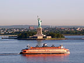
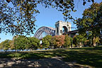
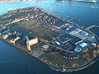

STATEN ISLAND FERRY
The Staten Island Ferry is one of the last remaining vestiges of an entire ferry system in New York City that transported people between Manhattan and its future boroughs long before any bridges were built. In Staten Island, the northern shores were spiked in piers, competing ferry operators braved the busy waters of New York harbor. Today the Staten Island Ferry provides 22 million people a year (70,000 passengers a day not including weekend days) with ferry service between St. George on Staten Island and Whitehall Street in lower Manhattan.

www.siferry.com
CENTRAL PARK
Arguably one of the most famous parks in the world, Central Park is a manmade wonder. With over 25 million guests per year.Set in the middle of bustling Manhattan, its grounds serve as a safe haven, not only for athletes, daydreamers, musicians, and strollers, but also for teems of migratory birds each year. One can spend an entire peaceful day roaming its grounds, gazing upon nearly 50 fountains, monuments, and sculptures or admiring its 36 bridges and arches.
5 Av To Central Park W, 59 St To 110 St
www.centralparknyc.org
ASTORIA PARK
Although widely known for its beautiful pool, the oldest and largest in the city, Astoria Park offers more than aquatic pleasures. Outdoor tennis courts, a track, a bandstand, multiple trails, basketball courts, and playgrounds lure visitors from the five boroughs and beyond. And the views! Sitting on the edge of the East River and resting between the Triborough Bridge and Hell Gate Bridge, the park offers shoreline sights and sounds that make the benches along its perimeter popular spots year-round.

19 St. bet. Astoria Park S. and Ditmars Blvd.
https://www.nycgovparks.org/parks/astoria-park
GOVERNOR'S ISLAND
Governors Island is a 172-acre island in Upper New York Bay. The National Park Service administers a small portion of the north of the island as the Governors Island National Monument, while the Trust for Governors Island operates the rest as a public park. The national historic landmark district, approximately 92 acres of the northern half of the island, is open to the public for several months in the summer and early fall. The island is accessed by ferries from Brooklyn and Manhattan.

Governors Island, New York, NY 11231
www.govisland.com